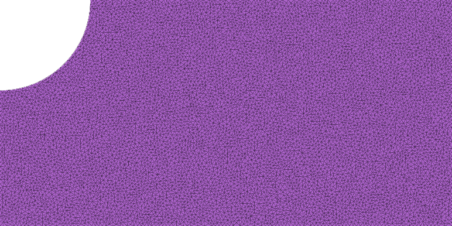

Your first PolyFEM simulation¶
This hands-on introduction starts with a complete, downloadable example, explains each part of the input, and then changes the physics and boundary conditions. You can run PolyFEM without compiling it if a suitable prebuilt package is available.
What you will do: open the PolyFEM desktop application, load a JSON simulation of a plate with a hole, run it using the Run button, inspect the output in ParaView, and then try linear elasticity.

1. Get PolyFEM¶
Choose one of these paths:
PolyFEM’s Artifacts workflow packages the executable for Linux x86-64, macOS ARM64, and Windows AMD64.
- Open the workflow and choose a successful run on
main. For example, this successful October 30, 2026 run contains all three platform packages. - Under Artifacts, download the package matching your operating system. GitHub may ask you to sign in.
- Extract the Linux
.tar.gzor Windows.zip, or open the macOS.dmg. Launch the packaged PolyFEM desktop application (polyfem_app), using the normal launcher for your platform. The desktop app has Load JSON, Load HDF5, and Run controls. - The command-line
PolyFEM_binis a separate option and is not required for the walkthrough.
Workflow artifacts, not tagged releases
These packages are built from the project’s main branch. They are CI artifacts (which can expire), not assets attached to the older v0.5 GitHub release. Use the latest successful workflow run when the example link expires.
Building from source is useful when modifying PolyFEM itself or when no prebuilt package matches your platform. You need CMake 3.25+, a C++17 compiler, Git and an internet connection for initial dependency downloads. Python development headers are also required unless you disable Python support.
git clone https://github.com/polyfem/polyfem.git
cd polyfem
cmake -S . -B build -G Ninja -DCMAKE_BUILD_TYPE=Release
cmake --build build
Ninja is recommended but optional; omit -G Ninja if you are using a different generator. See the up-to-date PolyFEM build instructions for platform-specific notes.
PolyFEM also offers a separate Python interface:
conda install -c conda-forge polyfempy
The command-line examples below use the C++ executable, not polyfempy. For Python examples, see the Python guide and Jupyter tutorial.
2. Download a complete first example¶
Create an empty directory called polyfem-first-run and save both files there:
run.json— the ready-to-run configuration (open the link and save the file).plate_hole.obj— the example mesh (download it into the same directory).
Your working directory should contain:
polyfem-first-run/
├── plate_hole.obj
└── run.json
Keep the files together
The configuration contains "mesh": "plate_hole.obj". Running it from the directory containing both files avoids path-resolution surprises.
3. Run the simulation in the desktop application¶
- Launch the PolyFEM app (
polyfem_app) from the downloaded package. If you compiled from source, make sure the application was enabled withPOLYFEM_WITH_APP=ONand launch the built app. - Click Load JSON and select
run.jsonfrom yourpolyfem-first-rundirectory. The mesh path inside the JSON refers toplate_hole.objin that same directory. - Click Run to start the solve. The interface displays Running… while it is executing; wait for it to finish, and check any displayed errors if the input cannot be loaded.
- Find the generated output in the configured output directory. This example requests
result.vtuandstats.json.
The application also has a Load HDF5 button for bundled inputs, but JSON is simpler for a first exercise.
Command-line alternative
If you prefer scripting or automation, the separate command-line executable accepts the same example:
/path/to/PolyFEM_bin --json run.json
This is optional for beginners. It is not how the desktop application is launched.
What are we solving?¶
The Laplacian is a scalar PDE. This example uses PolyFEM’s Franke preset, which provides a convenient test problem without requiring you to manually define forces and boundary values. PolyFEM constructs the finite-element system, solves it, and exports the field for visualization.
4. Inspect the results¶
Install ParaView and open the generated result.vtu.
- Click Apply in ParaView after loading the data.
- Choose the solution field in the Coloring dropdown.
- Compare the visualization with the reference below.
| Input mesh | Reference solution |
|---|---|
 |
|
For this scalar problem, you are viewing a field on a fixed geometry, not deforming the mesh. The Warp By Vector filter becomes useful when you solve displacement-based elasticity problems.
5. Understand run.json¶
Here is the complete example, so you can read it alongside the downloaded file:
{
"geometry": {
"advanced": { "normalize_mesh": true },
"mesh": "plate_hole.obj",
"surface_selection": { "threshold": 1e-7 }
},
"materials": { "type": "Laplacian" },
"preset_problem": { "type": "Franke" },
"solver": { "linear": { "solver": "Eigen::SparseLU" } },
"output": {
"json": "stats.json",
"paraview": { "file_name": "result.vtu" }
}
}
| Section | Meaning | Try changing |
|---|---|---|
geometry |
Load a mesh and optionally normalize its size | Use a different mesh |
surface_selection |
Associate boundary primitives with IDs | Change or specify a boundary selection |
materials |
Choose the governing PDE/material | Laplacian → LinearElasticity |
preset_problem |
Supply a built-in test problem | Replace with your own boundary conditions |
solver |
Select numerical linear solver | Explore other supported solvers |
output |
Write data for diagnostics and visualization | Change the output file name |
For every available setting, use the JSON input guide and the automatically generated JSON specification. The interactive JSON builder is another way to explore configuration options.
6. Change the problem: linear elasticity¶
Now use the same mesh to solve a vector-valued displacement problem.
- Copy
run.jsontoelasticity.json. -
Replace
"materials": { "type": "Laplacian" }with:"materials": { "type": "LinearElasticity", "E": 210000, "nu": 0.3 } -
Remove the entire
preset_problemsection, including its trailing comma as needed. -
Add the following top-level
boundary_conditionssection:"boundary_conditions": { "neumann_boundary": [ { "id": 3, "value": [100, 0] } ], "dirichlet_boundary": [ { "id": 1, "value": [0, 0], "dimension": [true, false] }, { "id": 4, "value": [0, 0], "dimension": [false, true] } ] } -
Change the output filename to
elasticity.vtu, then return to the desktop app, click Load JSON to selectelasticity.json, and click Run again. You can also run it usingPolyFEM_bin --json elasticity.jsonif you prefer the CLI.
What changed? In elasticity, the unknown is a displacement vector. Neumann conditions prescribe a force/traction; Dirichlet conditions constrain displacement. The dimension masks here restrict only one coordinate at each of the two selected boundaries.
These IDs come from the plate-with-hole boundary-tagging convention used in the full Getting Started tutorial; they are not automatically meaningful for an arbitrary mesh.
Explore boundary conditions visually
In ParaView, color the resulting field and use Warp By Vector with the displacement field to see the deformation. You may need to adjust the warp scale to make small displacements noticeable.
7. Where to go next¶
- Time stepping and moving boundary conditions: the full Getting Started tutorial introduces
time.dt,time.tend, and time-dependent expressions. - Contact and friction: the IPC Quick Start Guide begins with two cubes falling onto a plane, then develops stiffness, collision, and time-step variations.
- Several materials in one scene: see the Multi-Material tutorial.
- Real-world test scenes: explore the polyfem-data repository. Its examples are useful as complete configurations, but some refer to meshes and shared JSON files elsewhere in that repository. Keep their relative paths intact when running them.
Troubleshooting¶
The app cannot start. Check that the downloaded package matches your architecture (notably macOS ARM64 versus Intel). The GUI application is polyfem_app; PolyFEM_bin is the separate CLI executable.
Cannot open plate_hole.obj. Make sure the mesh was downloaded as a raw OBJ file (not an HTML web page) and lives alongside run.json. Run from that directory or use an absolute mesh path.
The JSON cannot be parsed. JSON requires commas between entries, double-quoted keys, and no trailing comma after the last property. If you made edits in Step 6, check the transition between the materials, boundary_conditions, and solver blocks.
The app cannot load the JSON. Check that run.json and the referenced plate_hole.obj are available together. The Load JSON button expects a JSON configuration, not a mesh file.
The simulation ran but you cannot see the result. Search the output directory for result.vtu, elasticity.vtu, or stats.json. Open the VTU file in ParaView and click Apply.
The result doesn’t look like the picture. Check the chosen field and color scale. Elasticity results may need the Warp By Vector filter; the Laplacian example does not.